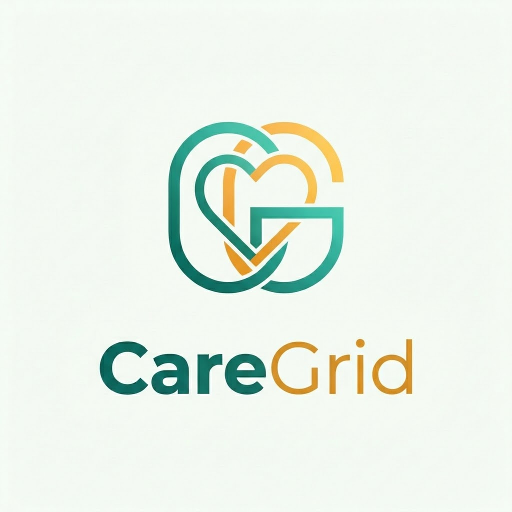

CareGrid BENEFICIARY PORTAL · DEMOWELCOME TO CAREGRID
My Digital ID
View your NGO-issued beneficiary card. This is a browser preview of the mobile feature.
This independent screen contains only fictional preview data. There is no authentication or cross-portal sync. The Flutter mobile screen is included in the project source.